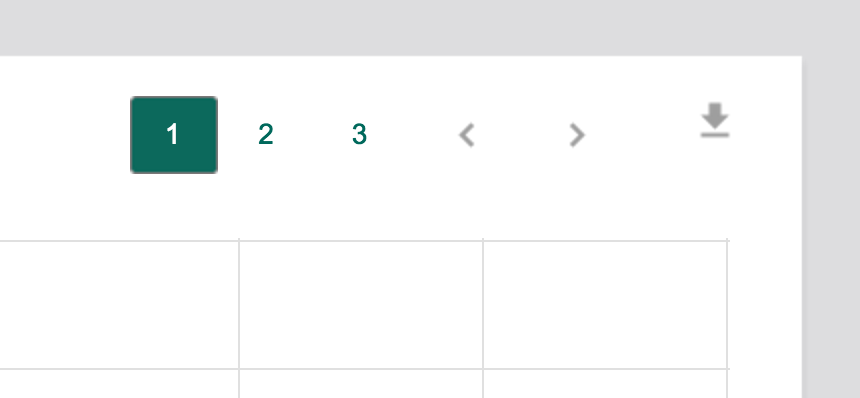

Pagination
Usage
When pagination is appropriate
When a large collection of similar items (whether in list view, card grid view, or other view) needs to be displayed on one screen, pagination may be appropriate to break up the collection into manageable views.
- Item 1
- Item 2
- Item 3
- Item 4
- Item 5
When it's NOT appropriate
If any of the following apply to a collection of items, you should consider using something other than pagination (such as plain old scrolling):
- If the collection always contains a fixed total number of items
- If there must only be one item shown at a time (such as in a carousel or tabbed preview of a smaller collection)
- If we cannot guarantee that the maximum number of items shown will be fixed (if you say there will be <= 10 results per page, don't lie)
- If each item takes up so much of the page that users think there aren't more items
Placement
Pagination controls can appear at the bottom of a list view or in the upper right of a graphic set (such as a in a graph with more data points than can fit on the current page).

Other considerations
- If your page has a filterable table with pagination controls, it should have deep-linking information in its URL that allows a user to share a link with an expectation that the results will be reasonably similar when they return. Of course, with databases being what they are, nothing is 100% guaranteed, but if a user needs to return to the middle 20 items that meet certain filter selections, they should be able to do so.
- If a deep link goes out of bounds (such as to a page of results that doesn't exist given the filter options), the table should just display the first page. The URL should then be updated to reflect that the first page is shown.
- See the filtering and empty states sections for more info on what happens if a URL deep links and/or filters down to something that doesn't have any results.
- If loading a list page requires a network call, follow the progress indicator pattern.
Acceptance Criteria
User testing:
- Users should be able to be able to articulate what they're seeing on any given page accurately (eg, "this is the third page of results for all campaigns with 'Bill' in the name. I think they're sorted by start date.")
- Accessing an arbitrary page should meet minimum usability standards (44px click zones, acceptable error rates, etc.)
Tech testing:
- Deep linking should return the same items in the same order across two requests given no changes to the database entries EXCEPT, for instance, if the status of a campaign changes on its own.
- Out-of bounds pages are never available for clicking.
- No more than 8 spaces for pages should be visible.
- The first and last pages are always available for clicking.
- At mobile widths, the previous/next controls appear in the center, underneath the page number controls.
- If the user is on the last or first page of results, the "next" and "previous" controls should be disabled, respectively.
- Depending on the number of pages and the current page highlighted, the options should appear as follows:
- Only 5 pages, first page shown: 1, 2, 3, 4, 5
- Only 5 pages, second page shown: 1, 2, 3, 4, 5
- More than 5 pages, second page shown: 1, 2, 3, 4, 5, 6,..., 183
- More than 5 pages, 30th page shown: 1, ..., 29, 30, 31, 32,..., 183
References
- Material Design on tables within cards (good example of keeping pagination controls together and to the right)
- An ember-cli component for deep-linking
- Smashing magazine's guidelines for pagination (a bit old but relevant)
- Quince on pagination, and some good examples as to why explicit "first" and "last" buttons ought be considered an antipattern